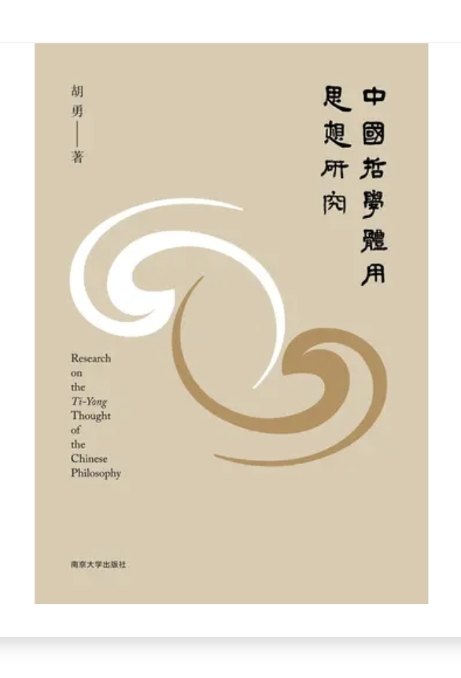

奠基立体奠基立體Theoretical Substance
奠基于中国体知—工夫之文明范式，融通西方认知—技术之文明成就，于觉知与认知的统一处，建构关于生命觉醒与实践、宇宙运化与开展的完整理论。奠基於中國體知—工夫之文明範式，融通西方認知—技術之文明成就，於覺知與認知的統一處，建構關於生命覺醒與實踐、宇宙運化與開展的完整理論。Integrating the theories of mind-nature, realms and cultivation, it builds a complete theory of awakening, wisdom and the practice of life at the unity of awareness and cognition.
弘传致用弘傳致用Function in the World
修身、正心、治业三者同治。上达于面向大众的弘扬传播，下贯于面向组织的超级管理学。修身、正心、治業三者同治。上達於面向大眾的弘揚傳播，下貫於面向組織的超級管理學。Cultivating body, rectifying mind, ordering the world as one — reaching up to public dissemination and down through organizational Super-Management.
外觉 · 内觉 · 本觉外覺 · 內覺 · 本覺Outer · Inner · Self
外觉外覺Outer
觉于外境，认知万物之相。这是与世界照面的第一层觉，也是知识与科学之所由。覺於外境，認知萬物之相。這是與世界照面的第一層覺，也是知識與科學之所由。Awareness turned to the outer world, cognizing the forms of things — the first layer, the ground of knowledge and science.
内觉內覺Inner
觉于内心，观照念起念灭、情动意生。由外返内，是修养工夫的起点。覺於內心，觀照念起念滅、情動意生。由外返內，是修養工夫的起點。Awareness turned inward, observing the rise and fall of thoughts and feelings — the turn from outer to inner, the start of cultivation.
本觉本覺Self
觉于觉者本身——觉那个正在觉的「我」，返归本有之觉性。此为二阶之觉，不可对象化，结穴于吾心光明。覺於覺者本身——覺那個正在覺的「我」，返歸本有之覺性。此為二階之覺，不可對象化，結穴於吾心光明。Awareness of the aware one itself — awakening to the very "I" that is aware, returning to the innate nature of awareness. This second-order awareness cannot be objectified; it culminates in the luminous mind.
反思（一阶最高态）≠ 返思（二阶最高态）。心之二阶机制可摹，觉之二阶实现不可摹——结穴于「吾心光明」。此即觉智哲学与 AI 认知的分野所在。反思（一階最高態）≠ 返思（二階最高態）。心之二階機制可摹，覺之二階實現不可摹——結穴於「吾心光明」。此即覺智哲學與 AI 認知的分野所在。Reflection (highest first-order state) ≠ Re-flection (highest second-order state). The mind's second-order mechanism can be modeled; awareness's second-order realization cannot — culminating in "my mind is luminous." Here lies the divide between awakened wisdom and AI cognition.
从管子到阳明從管子到陽明From Guanzi to Yangming
《内业》言「心之中又有心焉」，已隐含觉照之觉、二阶之心的雏形。《內業》言「心之中又有心焉」，已隱含覺照之覺、二階之心的雛形。The "Inner Workings" speaks of "a mind within the mind" — an early seed of second-order awareness.
以「虚壹而静」为大清明之境，是心自我调节、返观自照的工夫。以「虛壹而靜」為大清明之境，是心自我調節、返觀自照的工夫。Emptiness, unity and stillness as the state of great clarity — the mind’s self-regulation and inward reflection.
「唯道集虚」，以心斋坐忘去除成心，达于未始有我之境。「唯道集虛」，以心齋坐忘去除成心，達於未始有我之境。Fasting the mind and sitting in forgetfulness dissolve the fixed self, reaching the state before the "I" ever was.
不住于相而心自生，是觉而无执、照而不粘的二阶实现。不住於相而心自生，是覺而無執、照而不粘的二階實現。Mind arises without dwelling on forms — awareness without attachment, the second-order realization.
良知是知善知恶、又知其知的自觉之知，临终「吾心光明」四字，可为此谱系之结穴。良知是知善知惡、又知其知的自覺之知，臨終「吾心光明」四字，可為此譜系之結穴。Innate knowing knows good and evil and knows that it knows — self-aware knowing. His last words, "my mind is luminous," seal this genealogy.

觉智哲学的文本根柢覺智哲學的文本根柢The Textual Roots

《中国哲学体用思想研究》《中國哲學體用思想研究》A Study of Substance–Function Thought in Chinese Philosophy
梳理中国哲学体用范畴的历史演变与理论构造。梳理中國哲學體用範疇的歷史演變與理論構造。A survey of the substance–function category's history and theoretical construction in Chinese philosophy.
《弘明集译注》《弘明集譯注》Annotated Translation of the Hongming Ji
对佛教护教文献《弘明集》的整理译注。對佛教護教文獻《弘明集》的整理譯注。An annotated translation of the Buddhist apologetic anthology Hongming Ji.
《牛首山文学·佛禅篇》《牛首山文學·佛禪篇》Niushou Mountain Literature: Buddhist Chan Volume
牛首山佛禅文脉的文学与思想整理。牛首山佛禪文脈的文學與思想整理。A literary and intellectual account of Niushou Mountain's Buddhist Chan lineage.
《道与器：AI的中国哲学读法》《道與器：AI的中國哲學讀法》The Dao and the Instrument
以道器之辨，读解 AI 之为器与其限。以道器之辨，讀解 AI 之為器與其限。Reading AI through the distinction of Dao and instrument, and its limits.
《吾丧我：AI与中国觉悟哲学》《吾喪我：AI與中國覺悟哲學》I Have Lost Myself
觉智哲学的核心文本：认知求真与体知求道。覺智哲學的核心文本：認知求真與體知求道。The core text: cognition seeking truth and embodied knowing seeking the Dao.
《心之二阶性》《心之二階性》The Second-Order Nature of Mind
阐明反思与返思之别，觉之二阶不可摹。闡明反思與返思之別，覺之二階不可摹。On the difference between reflection and re-flection; the un-modelable second order.
《金刚经心法》《金剛經心法》The Heart-Method of the Diamond Sutra
以般若空观贯通觉智之工夫论。以般若空觀貫通覺智之工夫論。Threading the cultivation theory of awakened wisdom through prajñā emptiness.
《「之间」的功夫——情爱觉智论》《「之間」的功夫——情愛覺智論》The Work of the "In-Between": On the Awakened Wisdom of Love
将体知—功夫传统应用于「两觉之间」的领域。將體知—功夫傳統應用於「兩覺之間」的領域。Applying the embodied-cultivation tradition to the realm "between two awarenesses."
由迷而觉，由觉而返观。愿与你在典籍与心性之间，同证此一段光明。由迷而覺，由覺而返觀。願與你在典籍與心性之間，同證此一段光明。From delusion to awakening, from awakening to turning inward. May we, between the classics and the mind-nature, witness this luminosity together.